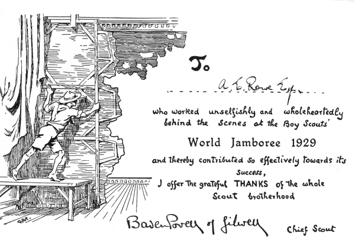

World Jamboree 1929
Rob Blackwell, 16 April 2006
This certificate was awarded to my Grandfather in 1929.
To A E Rowe Esquire who worked unselfishley and wholeheartedly behind the scenes at the Boy Scouts' World Jamboree 1929 and thereby contributed so effectively towards its success, I offer the grateful THANKS of the whole Scout brotherhood. Baden Powell of Gilwell. Chief Scout.